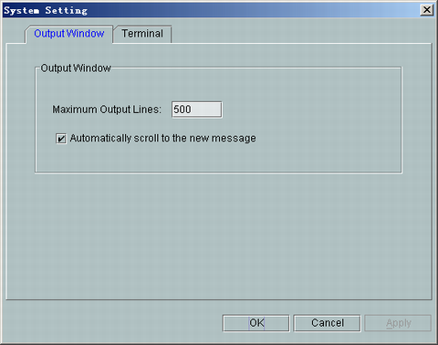
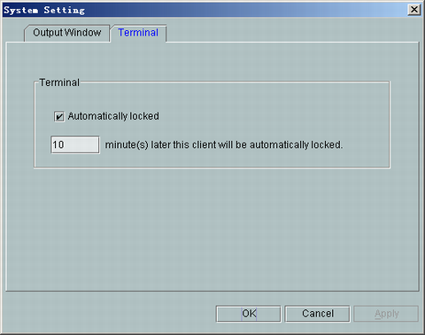

This describes how to set system parameters, including setting output window and terminal.
Prerequisites
- The Local Maintenance Terminal runs normally.
- The communication between the LMT and the BSC is normal.
Context
When the maximum output lines are displayed on the output window, the output window automatically scrolls to the new message.
The default lock period is 10 minutes. During the default lock period, the terminal is automatically locked if no operation is performed on the terminal.
Procedure
- Choose . A dialog box is displayed, as shown in Figure 1.
Figure 1 System Setting dialog box

- Select the Output Window tab page, and then set the Maximum Output Lines.
- Select the Terminal tab page, and then select Automatically locked to set the automatic lock period, as shown in Figure 2.
Figure 2 Setting automatic lock period

Copyright © Huawei Technologies Co., Ltd.